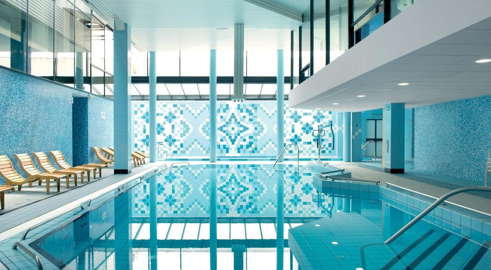
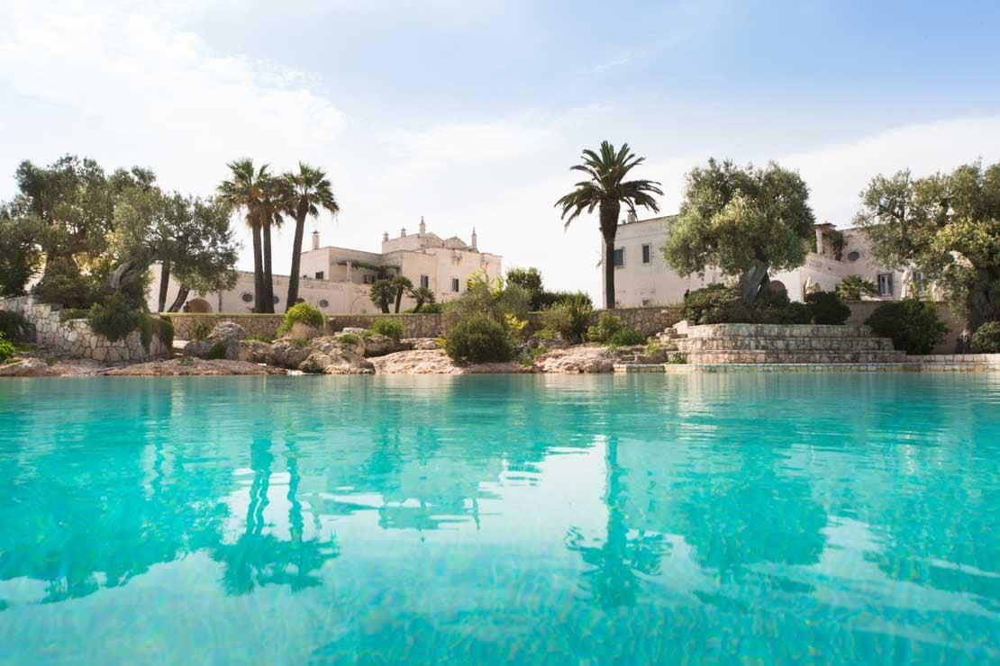
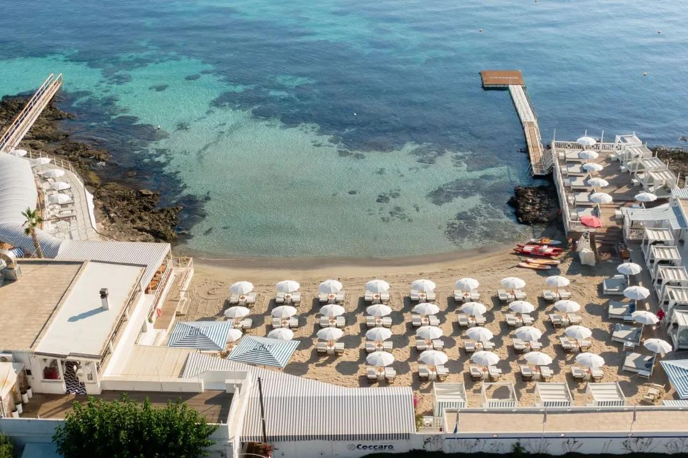
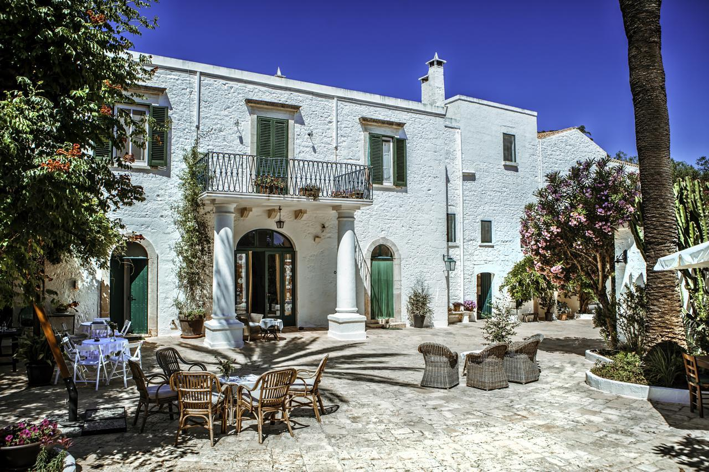
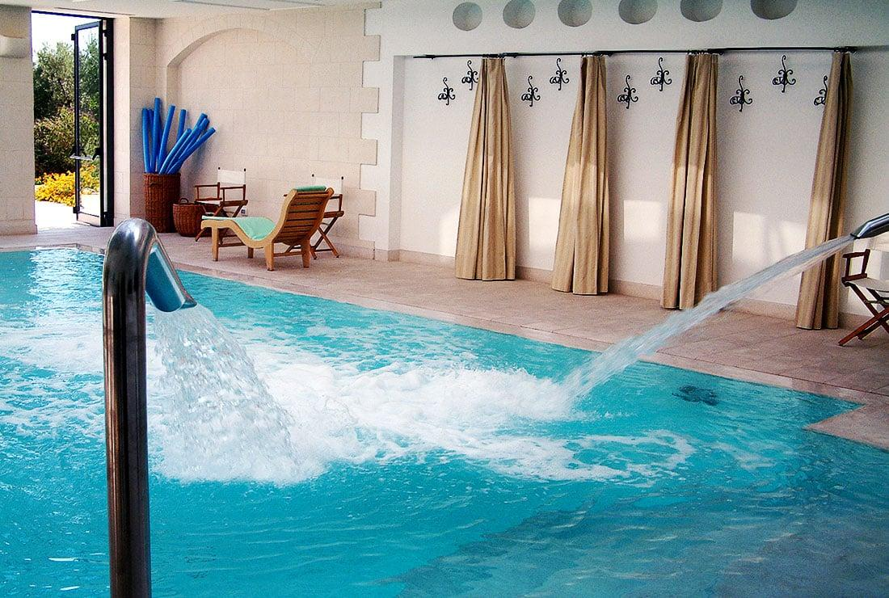

Terme Marine
Santa Cesarea Terme
Sorgenti di acque sulfuree e iodose calde che sgorgano in spettacolari grotte marine a picco sulla scogliera adriatica del Salento. Trattamenti termali e fangoterapia in cornici storiche.
Il ritmo lento del Sud, le masserie storiche trasformate in resort di lusso, le terme marine sulfuree di Santa Cesarea e la thalassoterapia sul mare adriatico: la Puglia e una destinazione di eccellenza per il turismo del benessere.
Sorgenti di acque sulfuree e iodose calde che sgorgano in spettacolari grotte marine a picco sulla scogliera adriatica del Salento. Trattamenti termali e fangoterapia in cornici storiche.

Immerso in un parco ad un passo dalle spiagge adriatiche di Fasano, offre acque oligominerali dalle straordinarie proprietà curative e fanghi caldi, ideale per cure riabilitative e relax.

Un centro di thalassoterapia d'avanguardia all'interno di una lussuosa masseria del XV secolo. Trattamenti rigeneranti che utilizzano acqua di mare attinta a 400 metri di profondità.

Un'antica masseria fortificata del XVI secolo con torre di avvistamento. Dispone di una spa di charme ricavata in antichi frantoi ipogei sotterranei scavati nel tufo.

Una residenza storica risalente al XVIII secolo circondata da ulivi millenari. Dispone di una spa all'avanguardia inserita in un antico e suggestivo frantoio ipogeo.

Una delle masserie più famose e prestigiose di Puglia, con un'imponente torre di guardia del XV secolo, un campo da golf sul mare e un'enorme piscina incastonata tra ulivi millenari.